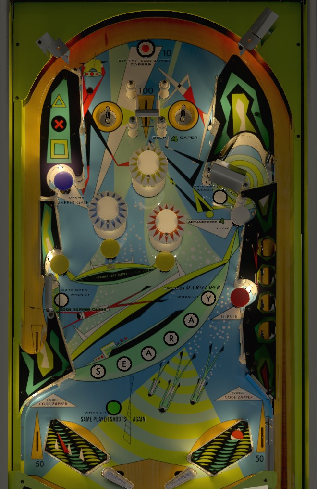

Try to always be in multiball. Lock balls in either the top saucers or the upper right lane. If there are balls in the top saucers, hitting the white mushroom bumper once releases them. If there is a ball in the upper right lane, the white mushroom bumper needs to be hit 4 times to release it back to the shooter lane. Balls cannot be locked in both places at once, but relocks can happen at any time, so pay attention to the backglass at whose turn it is at all times. Red mushroom bumper zips the flippers together. Yellow mushroom bumpers open the flippers, but score 100 points and Searay letters toward specials.
Unusually for an EM pinball from the mid-1960s, Capersville has two flavors of multiball.
If there are no balls in the upper right Deep 4 lane, any ball that enters a top saucer will be locked there. No points or awarded for putting a ball in either saucer. If a ball is locked in an upper saucer, a new ball will be fed to the plunger lane. If a ball cannot be locked in an upper saucer because there is a ball in the Deep 4 lane, the saucers will immediately kick out any ball that lands in them. Whenever one or more balls are locked in the top saucers, hitting the white mushroom bumper on the right releases the top saucer locks. Balls can be relocked in the top saucers at any time. If there are 2 balls left on the playfield and a lock happens at the same time as a drain, pay close attention to the backglass or the playfield Same Player Shoots Again light. If the game registered the drain first and then the lock, it will still be your turn, but if the drain was registered last, your ball is over.
If there are no balls in the top saucer, the gate into the upper right Deep 4 lane will be open. Shooting the gate will put a ball in a series of 4 locks. Whenever a ball is in the Deep 4 lock area, balls cannot be locked in the top saucers. Hitting the white mushroom bumper progresses the locked ball through the Deep 4 structure; 4 total white mushroom bumper hits gets the ball through the whole Deep 4 and spits the locked ball into the plunger lane for future use. If playing Capersville in a tournament, verify in advance whether tournament multiball rules require that a ball be plunged as soon as it is spit out from the Deep 4 lane.
There are no multiball-specific scoring rules or features, just the luxury of having more than one pinball on the playfield. Balls are never kicked out at the end of a turn or game; lock stealing is available between players and between games.
A gate into the left kicker lane only opens after the top rollover button or the blue mushroom bumper is triggered. The rollover switch at the end of the kicker lane scores either 100, 300, or 500 points. The exact value rotates every time a yellow or blue mushroom bumper, top rollover button, or out lane is registered. The current value of the lane is indicated by a reel in the lower left corner of the backglass: a triangle scores 100 points, the X means 300 points, and the square means 500 points. The gate into the kicker lane is closed at the start of each ball and re-closes when the kicker value is scored. The gate is very difficult to shoot into directly, and the ball ends up here on a ricochet more often than by any other method.
The top rollover button and any blue or yellow mushroom bumper adds a letter in Searay on the playfield. The number of times each player has spelled Searay in the game is also kept track of on the backglass, by the yellow score reels in the lower right. At 5, 6, 7, and 8 completions of Searay, the game will award either a free game or the current kicker lane value as a bonus. Lit Searay letters are reset at the end of every ball.
There are no in lanes. The flippers back up directly to the slingshots. Slingshots score 1 point. Only the left slingshot is an active kicker that launches the ball away; the right slingshot is passive, and the ball just bounces off of it with no momentum added. The red mushroom bumper closes the zipper flippers, completely blocking off the center drain. Yellow mushroom bumpers, which score 100 points, reopen the flippers; the flippers also reopen if the current player's turn ends. Out lanes score 50 points.
There is no end of ball bonus. Tilt ends the current ball only. There are no extra balls in the conventional sense; the same player shoots again light is used only to indicate when a player keeps their turn following a successfully locked ball.